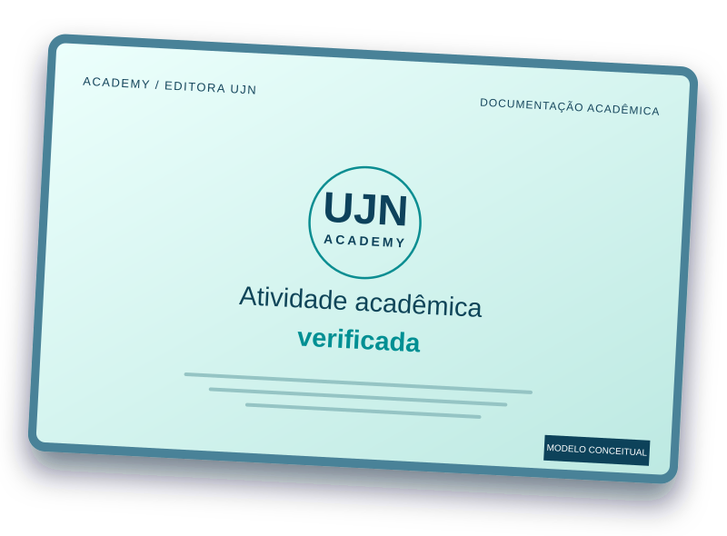

⌁
Descreva sua atividade
Informe o que realizou, em qual período, sua participação e a carga horária alegada.
Organize grupos de estudos, atividades colaborativas e projetos de extensão em um processo único: documentos analisados, contratação por pacote via Pix, códigos individuais e certificados verificáveis publicamente. A aprovação é documental e não garante, por si só, aproveitamento das horas por instituições de ensino.

A análise vem antes da emissão. A UJN não se declara organizadora de ações realizadas por terceiros.
Informe o que realizou, em qual período, sua participação e a carga horária alegada.
Reúna atas, apresentações, registros dos encontros e outras provas relevantes.
A equipe avalia a suficiência das evidências, divergências e eventual comprovação de horas.
Depois da confirmação bancária do pacote, cada participante utiliza seu próprio código para obter o registro verificável.
A elegibilidade não significa aprovação automática. Cada solicitação depende de evidências suficientes.
O responsável contrata e paga o pacote integral por Pix após a aprovação documental. Somente após a conferência do crédito são gerados os códigos individuais. Os participantes não pagam novamente pela emissão inicial.
O pagamento não compra aprovação documental, carga horária nem reconhecimento automático por instituições de ensino.
O documento final é nominal, possui ementa na segunda folha e código de autenticidade consultável em público. Esta representação não é um certificado emitido.
REGISTRO INDEPENDENTE DE VERIFICAÇÃO DOCUMENTAL
Participação de
Atividade coletiva analisada · período · carga horária verificada
MODELO — SEM VALIDADE PARA COMPROVAÇÃO
Sem código autêntico, assinatura ou QR Code ativoConheça o fluxo independente de cadastro, apresentação de evidências e acompanhamento. O acesso individual é liberado após a aprovação documental e a confirmação bancária do pacote coletivo.
Abrir portal do aluno ↗Cadastro e solicitações — prévia.
Acessar portalCadastros, análise e evidências.
Acessar gestão privadaIndicadores, gráficos e estatísticas.
Abrir dashboardTestes e diagnóstico do sistema.
Abrir centro